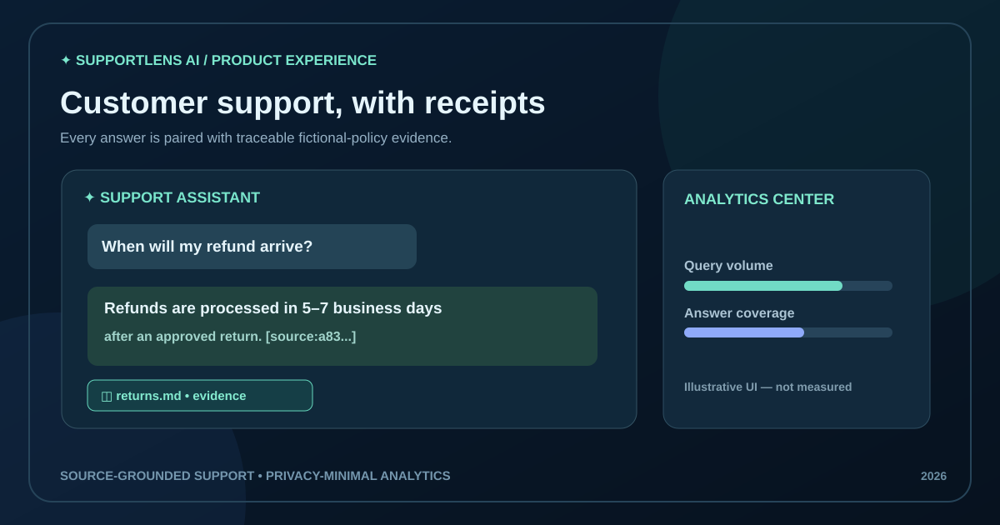
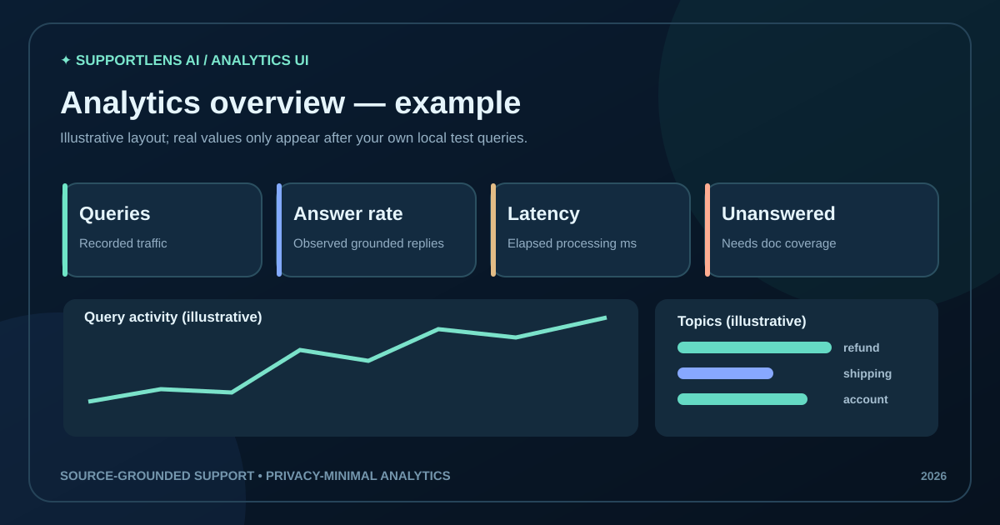

SupportLens AI
An evidence-grounded customer-support assistant that answers fictional store policy questions with source citations, abstains when documentation cannot support a claim and identifies unanswered support topics without saving raw conversations.

Support answers that show their sources.
Document RAG pipeline
Six fictional Markdown knowledge articles are ingested, checksummed, split into 110-word overlapping windows, embedded as sparse TF-IDF vectors and retrieved with cosine search. The extractive answerer includes chunk citations, with a human fallback for unsupported questions.
Stack: Python, FastAPI, local vectors, NLP, optional external LLM.
SQL-powered analytics
SQLite persists answer status, broad topic, citation count and server latency, rather than raw customer questions. The React dashboard presents query volume, coverage, response-time trends and unanswered topic groups.
Stack: React, JavaScript, SQL, SQLite and responsive CSS.
From trusted policies to verifiable evidence.

Tests and evaluation
GitHub CI runs Python unit/API tests and a React build. The 16-question authored fictional evaluation set checks source retrieval and unsupported cases. These checks are not an independent production accuracy benchmark.
Engineering limitations
Default embeddings are lexical TF-IDF, not a pretrained semantic model. Optional remote LLM generation requires credentials and user consent. Production identity, load testing, real customer integration and public API hosting are not claimed complete.
Find support documentation gaps.
